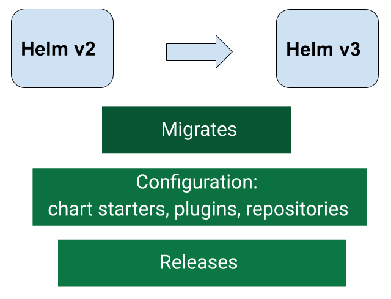

How to migrate from Helm v2 to Helm v3
Wed, Sep 11, 2019

One of the most important parts of upgrading to a new major release of Helm is the migration of data. This is especially true of Helm v2 to v3 considering the architectural changes between the releases. This is where the helm-2to3 plugin comes in.
It helps with this migration by supporting:
- Migration of Helm v2 configuration.
- Migration of Helm v2 releases.
- Clean up Helm v2 configuration, release data and Tiller deployment.
Setting up Helm v3
As we do not want to override Helm v2 CLI binary, we need to perform an additional step to ensure that both CLI versions can co-exist until we are ready to remove Helm v2 CLI and all it's related data:
Download latest Helm v3 release from
here, rename the binary to helm3 and store it in your path.
We are ready to use helm3:
$ helm3 repo list
Error: no repositories to show
As you see there are no repositories set as Helm v3 comes without stable repository setup by default, let's fix it up.
helm-2to3 plugin
helm-2to3 plugin will allow us to migrate and cleanup Helm v2 configuration and releases to Helm v3 in-place.
Installed Kubernetes objects will not be modified or removed.
Installing
Let's install it:
$ helm3 plugin install https://github.com/helm/helm-2to3
Downloading and installing helm-2to3 v0.2.0 ...
https://github.com/helm/helm-2to3/releases/download/v0.2.0/helm-2to3_0.2.0_darwin_amd64.tar.gz
Installed plugin: 2to3
$ helm3 plugin list
NAME VERSION DESCRIPTION
2to3 0.2.0 migrate and cleanup Helm v2 configuration and releases in-place to Helm v3
$ helm3 2to3
Migrate and Cleanup Helm v2 configuration and releases in-place to Helm v3
Usage:
2to3 [command]
Available Commands:
cleanup cleanup Helm v2 configuration, release data and Tiller deployment
convert migrate Helm v2 release in-place to Helm v3
help Help about any command
move migrate Helm v2 configuration in-place to Helm v3
Flags:
-h, --help help for 2to3
Use "2to3 [command] --help" for more information about a command.
Awesome.
Plugin features
Currently plugin supports:
- Migration of Helm v2 configuration
- Migration of Helm v2 releases
- Clean up Helm v2 configuration, release data and Tiller deployment
Migrate Helm v2 configuration
First we need to migrate Helm v2 config and data folders:
$ helm3 2to3 move config -h
migrate Helm v2 configuration in-place to Helm v3
Usage:
2to3 move config [flags]
Flags:
--dry-run simulate a command
-h, --help help for move
It will migrate:
- Chart starters
- Repositories
- Plugins
The safest way is to start with --dry-run flag:
$ helm3 2to3 move config --dry-run
2019/11/14 14:54:04 NOTE: This is in dry-run mode, the following actions will not be executed.
2019/11/14 14:54:04 Run without --dry-run to take the actions described below:
2019/11/14 14:54:04
2019/11/14 14:54:04 WARNING: Helm v3 configuration maybe overwritten during this operation.
2019/11/14 14:54:04
[Move Config/confirm] Are you sure you want to move the v2 configration? [y/N]: y
2019/11/14 14:54:12
Helm v2 configuration will be moved to Helm v3 configration.
2019/11/14 14:54:12 [Helm 2] Home directory: /Users/rimas/.helm
2019/11/14 14:54:12 [Helm 3] Config directory: /Users/rimas/Library/Preferences/helm
2019/11/14 14:54:12 [Helm 3] Data directory: /Users/rimas/Library/helm
2019/11/14 14:54:12 [Helm 3] Create config folder "/Users/rimas/Library/Preferences/helm" .
2019/11/14 14:54:12 [Helm 2] repositories file "/Users/rimas/.helm/repository/repositories.yaml" will copy to [Helm 3] config folder "/Users/rimas/Library/Preferences/helm/repositories.yaml" .
2019/11/14 14:54:12 [Helm 3] Create data folder "/Users/rimas/Library/helm" .
2019/11/14 14:54:12 [Helm 2] plugins "/Users/rimas/.helm/plugins" will copy to [Helm 3] data folder "/Users/rimas/Library/helm/plugins" .
2019/11/14 14:54:12 [Helm 2] starters "/Users/rimas/.helm/starters" will copy to [Helm 3] data folder "/Users/rimas/Library/helm/starters" .
Cool, now let's do the actual migration:
$ helm3 2to3 move config
WARNING: Helm v3 configuration maybe overwritten during this operation.
[Move Config/confirm] Are you sure you want to move the v2 configration? [y/N]: y
2019/11/14 14:55:00 Helm v2 configuration will be moved to Helm v3 configration.
2019/11/14 14:55:00 [Helm 2] Home directory: /Users/rimas/.helm
2019/11/14 14:55:00 [Helm 3] Config directory: /Users/rimas/Library/Preferences/helm
2019/11/14 14:55:00 [Helm 3] Data directory: /Users/rimas/Library/helm
2019/11/14 14:55:00 [Helm 3] Create config folder "/Users/rimas/Library/Preferences/helm" .
2019/11/14 14:55:00 [Helm 3] Config folder "/Users/rimas/Library/Preferences/helm" created.
2019/11/14 14:55:00 [Helm 2] repositories file "/Users/rimas/.helm/repository/repositories.yaml" will copy to [Helm 3] config folder "/Users/rimas/Library/Preferences/helm/repositories.yaml" .
2019/11/14 14:55:00 [Helm 2] repositories file "/Users/rimas/.helm/repository/repositories.yaml" copied successfully to [Helm 3] config folder "/Users/rimas/Library/Preferences/helm/repositories.yaml" .
2019/11/14 14:55:00 [Helm 3] Create data folder "/Users/rimas/Library/helm" .
2019/11/14 14:55:00 [Helm 3] data folder "/Users/rimas/Library/helm" created.
2019/11/14 14:55:00 [Helm 2] plugins "/Users/rimas/.helm/plugins" will copy to [Helm 3] data folder "/Users/rimas/Library/helm/plugins" .
2019/11/14 14:55:00 [Helm 2] plugins "/Users/rimas/.helm/plugins" copied successfully to [Helm 3] data folder "/Users/rimas/Library/helm/plugins" .
2019/11/14 14:55:00 [Helm 2] starters "/Users/rimas/.helm/starters" will copy to [Helm 3] data folder "/Users/rimas/Library/helm/starters" .
2019/11/14 14:55:00 [Helm 2] starters "/Users/rimas/.helm/starters" copied successfully to [Helm 3] data folder "/Users/rimas/Library/helm/starters" .
2019/11/14 14:55:00 Helm v2 configuration was moved successfully to Helm v3 configration.
Now let's run helm3 repo list again:
$ helm3 repo list
NAME URL
stable https://kubernetes-charts.storage.googleapis.com
jfrog https://charts.jfrog.io
rimusz https://charts.rimusz.net
buildkite https://buildkite.github.io/charts
jetstack https://charts.jetstack.io
odavid https://odavid.github.io/k8s-helm-charts
elastic https://helm.elastic.co
appscode https://charts.appscode.com/stable
$ helm3 plugin list
NAME VERSION DESCRIPTION
2to3 0.1.0 migrate Helm v2 configuration and releases in-place to Helm v3
edit 0.3.0 Edit a release.
gcs 0.2.0 Provides Google Cloud Storage protocol support.
https://github.com/vigles...
linter 0.1.1 Helm plugin to find hardcoded passwords in values.yaml files
monitor 0.3.0 Query at a given interval a Prometheus, ElasticSearch or Sentry instance...
Nice, now I can use the same Helm repositories and plugins which I have in Helm v2.
Note: Please check that all Helm v2 plugins work fine with the Helm v3, and remove plugins that do not work.
The move config will create the Helm v3 config and data folders if they don't exist, and will override the repositories.yaml file if it does exist.
The plugin also supports non default Helm v2 home and Helm v3 config and data folders, an example of it's use:
$ export HELM_V2_HOME=$HOME/.helm2
$ export HELM_V3_CONFIG=$HOME/.helm3
$ export HELM_V3_DATA=$PWD/.helm3
$ helm3 2to3 move config
Migrate Helm v2 releases
Now we are ready to start migrating releases.
Let's check available options:
$ helm3 2to3 convert -h
migrate Helm v2 release in-place to Helm v3
Usage:
2to3 convert [flags] RELEASE
Flags:
--delete-v2-releases v2 release versions are deleted after migration. By default, the v2 release versions are retained
--dry-run simulate a command
-h, --help help for convert
-l, --label string label to select Tiller resources by (default "OWNER=TILLER")
-s, --release-storage string v2 release storage type/object. It can be 'secrets' or 'configmaps'. This is only used with the 'tiller-out-cluster' flag (default "secrets")
--release-versions-max int limit the maximum number of versions converted per release. Use 0 for no limit (default 10)
-t, --tiller-ns string namespace of Tiller (default "kube-system")
--tiller-out-cluster when Tiller is not running in the cluster e.g. Tillerless
Nice, the plugin even supports the Tillerless Helm v2.
Let's check out for Helm v2 releases and pick one to test out the migration:
$ helm list
NAME REVISION UPDATED STATUS CHART APP VERSION NAMESPACE
postgres 1 Thu Nov 14 15:01:00 2019 DEPLOYED postgresql-7.1.0 11.5.0 postgres
redis 1 Thu Nov 14 15:02:12 2019 DEPLOYED redis-9.5.4 5.0.6 redis
The safest way of course to start with --dry-run flag:
$ helm3 2to3 convert --dry-run postgres
2019/11/14 15:03:17 NOTE: This is in dry-run mode, the following actions will not be executed.
2019/11/14 15:03:17 Run without --dry-run to take the actions described below:
2019/11/14 15:03:17
2019/11/14 15:03:17 Release "postgres" will be converted from Helm v2 to Helm v3.
2019/11/14 15:03:17 [Helm 3] Release "postgres" will be created.
2019/11/14 15:03:17 [Helm 3] ReleaseVersion "postgres.v1" will be created.
Now, let's run the actual migration:
$ helm3 2to3 convert postgres
2019/11/14 15:03:57 Release "postgres" will be converted from Helm v2 to Helm v3.
2019/11/14 15:03:57 [Helm 3] Release "postgres" will be created.
2019/11/14 15:03:57 [Helm 3] ReleaseVersion "postgres.v1" will be created.
2019/11/14 15:03:57 [Helm 3] ReleaseVersion "postgres.v1" created.
2019/11/14 15:03:57 [Helm 3] Release "postgres" created.
2019/11/14 15:03:57 Release "postgres" was converted successfully from Helm v2 to Helm v3.
2019/11/14 15:03:57 Note: The v2 release information still remains and should be removed to avoid conflicts with the migrated v3 release.
2019/11/14 15:03:57 v2 release information should only be removed using `helm 2to3` cleanup and when all releases have been migrated over.
Check out whether it was succesful:
$ helm list
NAME REVISION UPDATED STATUS CHART APP VERSION NAMESPACE
postgres 1 Thu Nov 14 15:01:00 2019 DEPLOYED postgresql-7.1.0 11.5.0 postgres
redis 1 Thu Nov 14 15:02:12 2019 DEPLOYED redis-9.5.4 5.0.6 redis
$ helm3 list -n postgres
NAME NAMESPACE REVISION UPDATED STATUS CHART APP VERSION
postgres postgres 1 2019-11-14 13:01:00.188487 +0000 UTC deployed postgresql-7.1.0 11.5.0
Note: As we did not specify --delete-v2-releases flag Helm v2 postgres release information was left in-tact, it can be deleted with helm3 2to3 cleanup later on.
When are you ready to move all your releases, you can automate it with running helm list in a loop and applying helm3 2to3 convert RELEASE for each Helm v2 release.
If you are using Tillerless Helm v2, just add --tiller-out-cluster to migrate the release:
$ helm3 2to3 convert postgres --tiller-out-cluster
Very cool and simple, right :-)
Clean up of Helm v2 data
The last step is cleaning up the old data. While this is not required, we strongly recommend it.
Let's check available options:
$ helm3 2to3 cleanup -h
cleanup Helm v2 configuration, release data and Tiller deployment
Usage:
2to3 cleanup [flags]
Flags:
--config-cleanup if set, configuration cleanup performed
--dry-run simulate a command
-h, --help help for cleanup
-l, --label string label to select Tiller resources by (default "OWNER=TILLER")
--release-cleanup if set, release data cleanup performed
-s, --release-storage string v2 release storage type/object. It can be 'secrets' or 'configmaps'. This is only used with the 'tiller-out-cluster' flag (default "secrets")
--tiller-cleanup if set, Tiller cleanup performed
-t, --tiller-ns string namespace of Tiller (default "kube-system")
--tiller-out-cluster when Tiller is not running in the cluster e.g. Tillerless
It will clean:
- Configuration (Helm home directory)
- v2 release data
- Tiller deployment
And of course the safest way is to start with --dry-run flag:
$ helm3 2to3 cleanup --dry-run
2019/11/14 15:06:59 NOTE: This is in dry-run mode, the following actions will not be executed.
2019/11/14 15:06:59 Run without --dry-run to take the actions described below:
2019/11/14 15:06:59
WARNING: "Helm v2 Configuration" "Release Data" "Release Data" will be removed.
This will clean up all releases managed by Helm v2. It will not be possible to restore them if you haven't made a backup of the releases.
Helm v2 may not be usable afterwards.
[Cleanup/confirm] Are you sure you want to cleanup Helm v2 data? [y/N]: y
2019/11/14 15:07:01
Helm v2 data will be cleaned up.
2019/11/14 15:07:01 [Helm 2] Releases will be deleted.
2019/11/14 15:07:01 [Helm 2] ReleaseVersion "postgres.v1" will be deleted.
2019/11/14 15:07:01 [Helm 2] ReleaseVersion "redis.v1" will be deleted.
2019/11/14 15:07:01 [Helm 2] Home folder "/Users/rimasm/.helm" will be deleted.
It will show what releases going to be deleted, Tiller service to be removed from kube-system namespace and Helm v2 home folder will be deleted.
When you are ready to clean up Hem v2 data, just run that command without --dry-run flag.
NOTE: The cleanup command will remove the Helm v2 Configuration, Release Data and Tiller Deployment. It cleans up all releases managed by Helm v2. It will not be possible to restore them if you haven't made a backup of the releases. Helm v2 will not be usable afterwards.
If you are using Tillerless Helm v2, just add --tiller-out-cluster to clean up Helm v2 data.
The plugin also supports non default Helm v2 home data folder and Tiller releases namespace:
$ export HELM_V2_HOME=$PWD/.helm2
$ helm 2to3 cleanup --tiller-ns some_namespace
Happy Helm v3 sailing